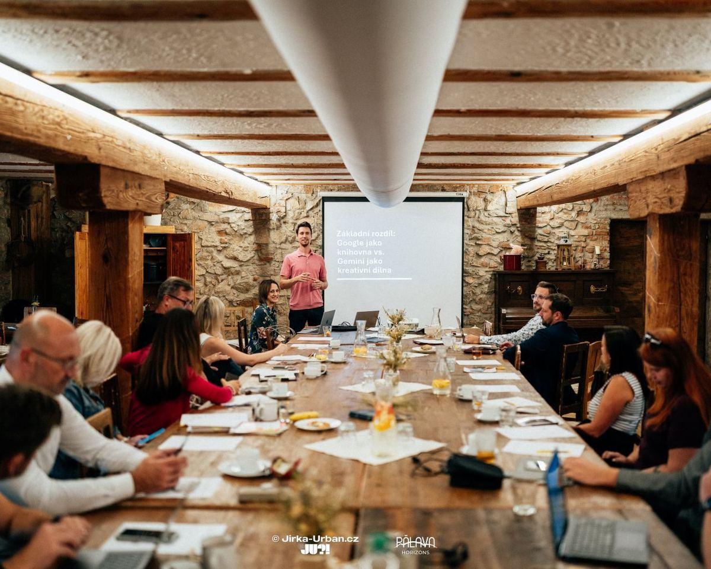
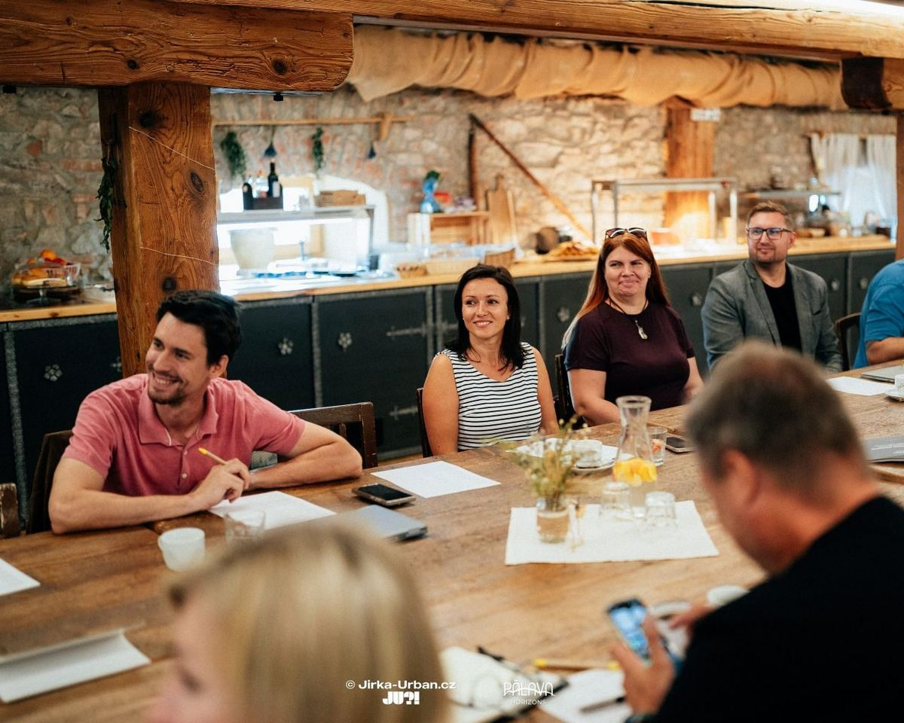
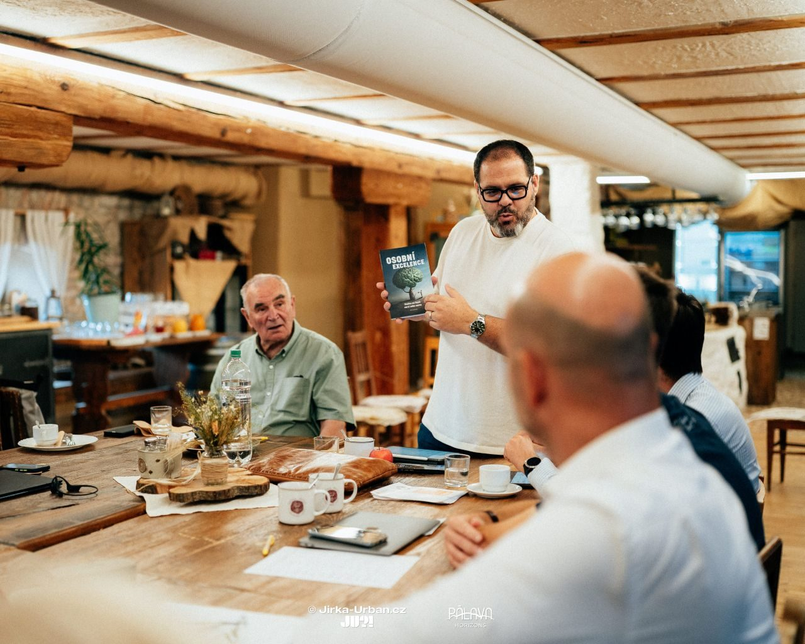
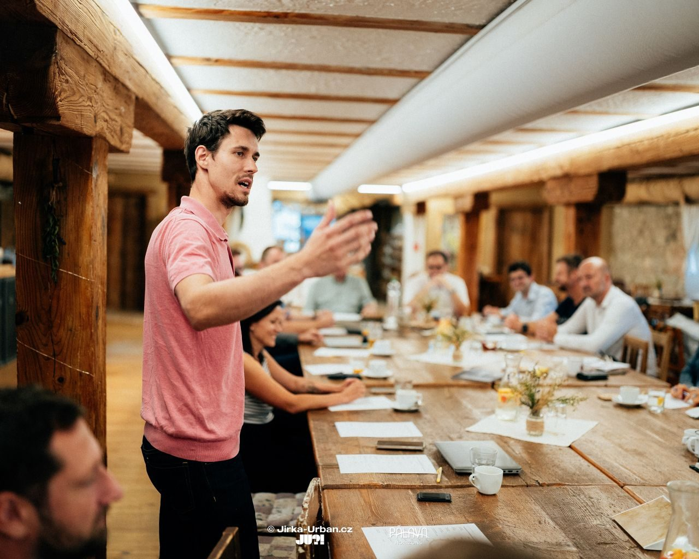
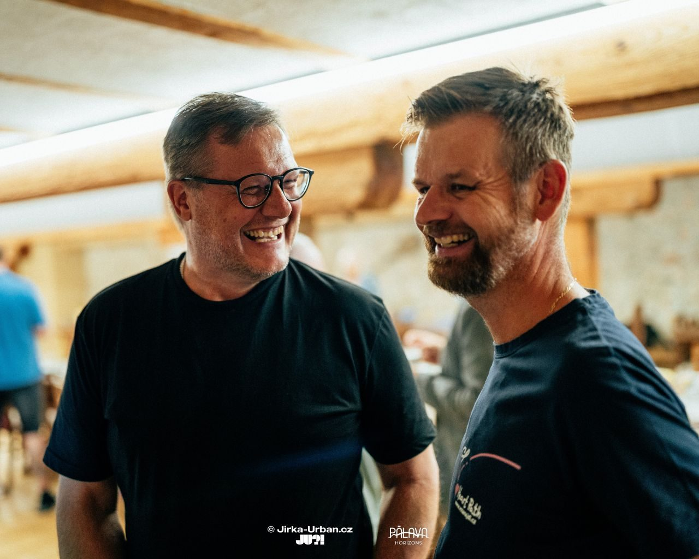

Ohlédnutí za 12. setkáním klubu Pod Pálavou
V úterý 2. září dopoledne proběhlo v malebném prostředí Krčmy a hotelu u Císařské cesty v Branišovicích již 12. setkání naší podnikatelské komunity Pod Pálavou. Dopolednem nás provedla Veronika Jankovičová, která hned v úvodu vystihla hlavní myšlenku našich setkávání:
„Je strašně důležité, abychom se tvořili navzájem, abychom si nastavovali zrcadla.“
Tato myšlenka je podle ní základem skutečného networkingu. Nejde jen o předávání vizitek, ale o vzájemnou inspiraci v detailech – v tom, jak pracujeme, jak se prezentujeme nebo jak si děláme radost ze života. Právě tato ochota být si navzájem příkladem dává naší komunitě skutečnou hodnotu.

V duchu tohoto dialogu se neslo celé dopoledne. Veronika postupně dala slovo klíčovým členům, aby představili pilíře klubu. Jiří Juránek promluvil o naší misi a vizi, Gabriel Kožík představil etický kodex a Pavel Herman se zamyslel nad propojením byznysu a přátelství. Prostor samozřejmě dostal každý z nás, abychom představili své firmy a projekty.
Místo klasických přednášek jsme se tentokrát ponořili do praktického workshopu. Gabriel Kožík nás provedl světem AI nástrojů a jejich reálným využitím v podnikání. O budoucí směřování se postaral Tomáš Hampl, který nás nalákal na atraktivní technologická vylepšení, která nás čekají na podzim.
Na závěr jsme si jako vždy dali slovo podruhé. Zpětnou vazbu formou Talk and Reflect vedl Radek Osička, ale o tom, jak proběhla, si povíme zase příště. Děkujeme všem za dopoledne plné skvělých myšlenek a nových spojení.
Na fotografiích od Jirky Urbana si můžete opět připomenout včerejší klubovou atmosféru.





Přidejte se k nám příště!
Další setkání proběhne 16. září 2025 od 9:00 do 12:00 opět v Krčmě a hotelu u Císařské cesty.
REGISTROVAT SE ZDE Přidat do kalendáře